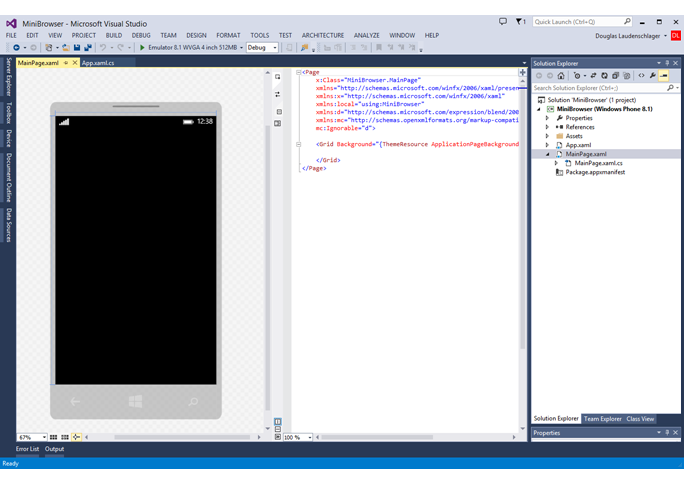

The goal of this How-To is to make it as easy to use Bing Maps in a Windows Phone 8.1 App as it is in a tablet App. I started using the Windows Phone 8.1 Javascript API for a school project and found a huge wealth of information from Microsoft on their API's for their products, and E books, and Videos but amazingly there was not a tutorial which covered actually getting started with Bing Maps in a Windows Phone using JavaScript. So this guide is intended for a person with a background in using JavaScript and who wants to do a basic Windows Phone App with a Bing Map.
In my opinion, after doing this once is, choose JavaScript for the windows phone if you really, really, don't want to learn XAML and C#. Because if you use JavaScript already you still have to learn a fair amount of specific libraries from Microsoft to get the phone JavaScript to work right. Also, while the JavaScript app runs very well it still runs the JavaScript through an intepreter just like a browser does. So this means your app will never be quite as fast or efficient as a C# app derived app could be. Even though I have only done one project with the Windows Phone I really mean this. If I ever do another project for the Windows Phone, I will learn XAML and C#.
Yeup. The documentation compared with Microsoft's doucmentation for other languages and support in Visual Studio combined with the specific JavaScript for windows phone libraries make using JavaSciprt a lot less beneficial than one might at first think. This is my opinion from my experience.
For example, look at the image of Phone app layout below.
On the left is the preview you get when using XAML to layout your phone. I could not get this view to with JavaScript. It certainly is a time saver to be able to click and drag common elements to your phone layout and actually see the attributes of the XAML tags chaning in real time. This really helped me understand what I was doing when I went back to codeing by hand or when I had to design an algorithm which would interact with the laytout of the phone pages.
